How Can I Obtain the IP Address of a Client?
When you use ELB to route requests to backend servers, IP addresses of the clients will be translated by the ELB system. This FAQ provides the operations for obtaining the IP addresses of the clients.
Constraints and Limitations
- If Network Address Translation (NAT) or Web Application Firewall (WAF) is used, you cannot obtain the IP addresses of the clients.
- If the client is a container, you can obtain only the IP address of the node where the container is located, but cannot obtain the IP address of the container.
- If the Obtain Client IP Address option is enabled for TCP or UDP listeners, a cloud server cannot be used as a backend server and a client at the same time. In this case, you can configure the TOA plug-in to obtain the source IP addresses.
- By default, the Obtain Client IP Address option is enabled for TCP and UDP listeners of dedicated load balancers. You do not need to manually enable it.
Layer 7 Load Balancing
Configure the application server and obtain the IP address of a client from the HTTP header.
The real IP address is placed in the X-Forwarded-For header field by the load balancer in the following format:
X-Forwarded-For: IP address of the client,Proxy server 1-IP address,Proxy server 2-IP address,...
If you use this method, the first IP address obtained is the IP address of the client.
Apache Server
- Install Apache 2.4.
For example, if CentOS 7.5 is used as the OS, run the following command to install the software:
yum install httpd
- Add the following content to the end of Apache configuration file /etc/httpd/conf/httpd.conf:
LoadModule remoteip_module modules/mod_remoteip.so
RemoteIPHeader X-Forwarded-For
RemoteIPInternalProxy 100.125.0.0/16
Figure 1 Content to be added
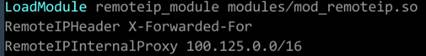

Add the IP address range of the proxy server after RemoteIPInternalProxy.
- Shared load balancers: 100.125.0.0/16 and the IP address range used by the AAD service. 100.125.0.0/16 is used by load balancers to communicate with backend servers, and there are no security risks. Use commas (,) to separate multiple entries.
- Dedicated load balancers: the CIDR block of the subnet where the load balancer resides
- Change the log output format in the Apache configuration file to the following (%a indicates the source IP address):
LogFormat "%a %l %u %t \"%r\" %>s %b \"%{Referer}i\" \"%{User-Agent}i\"" combined
- Restart Apache.
systemctl restart httpd
- Obtain the actual IP address of the client from the httpd access logs.
Nginx Server
For example, if CentOS 7.5 is used as the OS, run the following command to install the software:
- Run the following commands to install http_realip_module:
yum -y install gcc pcre pcre-devel zlib zlib-devel openssl openssl-devel
wget http://nginx.org/download/nginx-1.17.0.tar.gz
tar zxvf nginx-1.17.0.tar.gz
cd nginx-1.17.0
./configure --prefix=/path/server/nginx --with-http_stub_status_module --without-http-cache --with-http_ssl_module --with-http_realip_module
make
make install
- Run the following command to open the nginx.conf file:
vi /path/server/nginx/conf/nginx.conf
- Add the following content under http or server:
;100.125.0.0/16set_real_ip_from
real_ip_header X-Forwarded-For;
Figure 2 Content to be added
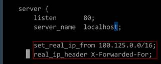
Add the IP address range of the proxy server after set_real_ip_from.
- Shared load balancers: 100.125.0.0/16 and the IP address range used by the AAD service. (100.125.0.0/16 is used by load balancers to communicate with backend servers, and there are no security risks. Use commas to separate multiple entries.
- Dedicated load balancers: the CIDR block of the subnet where the load balancer resides
- Start Nginx.
/path/server/nginx/sbin/nginx
- Obtain the actual IP address of the client from the Nginx access logs.
cat /path/server/nginx/logs/access.log
Tomcat Servers
In the following operations, the Tomcat installation path is /usr/tomcat/tomcat8/.
- Log in to a server on which Tomcat is installed.
- Check whether Tomcat is running properly.
ps -ef|grep tomcat
netstat -anpt|grep java
Figure 3 Tomcat running properly
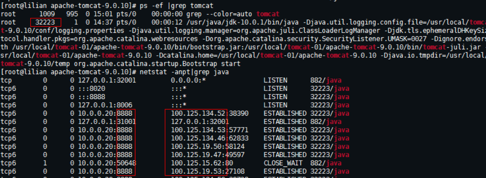
- Add the following configuration items to the server.xml file:
<Valve className="org.apache.catalina.valves.AccessLogValve" directory="logs"
prefix="localhost_access_log." suffix=".txt"
pattern="%{X-FORWARDED-FOR}i %l %u %t %r %s %b %D %q %{User-Agent}i %T" resolveHosts="false" />
Figure 4 Example configuration
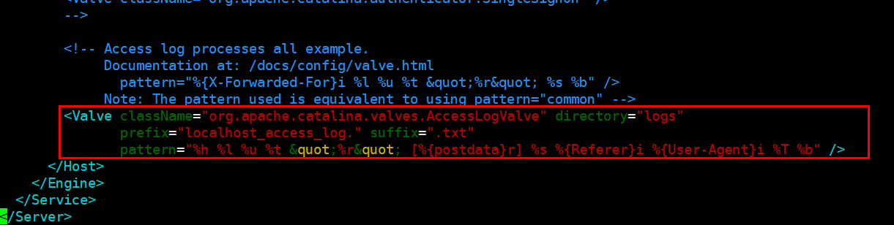
- Restart the Tomcat service.
cd /usr/tomcat/tomcat8/bin && sh startup.sh
In this command, /usr/tomcat/tomcat8/ is the Tomcat installation path. Change it based on site requirements.
Figure 5 Restarting the Tomcat service
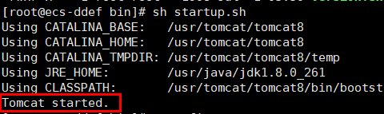
- View the latest logs.
As highlighted in the following figure, IP addresses that are not in the IP address range starting with 100.125 are the source IP addresses.
cat localhost_access_log..2020-09-10.txt
In this command, localhost_access_log..2020-09-10.txt indicates the log path of the current day. Change it based on site requirements.
Figure 6 Querying the source IP address
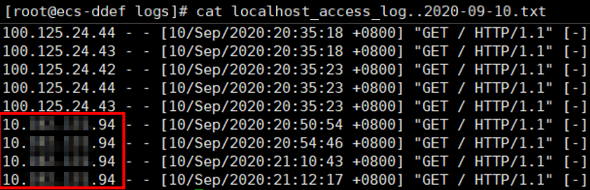
Windows Server with IIS Deployed
The following uses Windows Server 2012 with IIS7 as an example to describe how to obtain the source IP address.
- Download and install IIS.
- Download the F5XForwardedFor.dll plug-in and copy the plug-ins in the x86 and x64 directories to a directory for which IIS has the access permission, for example, C:\F5XForwardedFor2008.
- Open the Server Manager and choose Modules > Configure Native Modules.Figure 7 Selecting modules
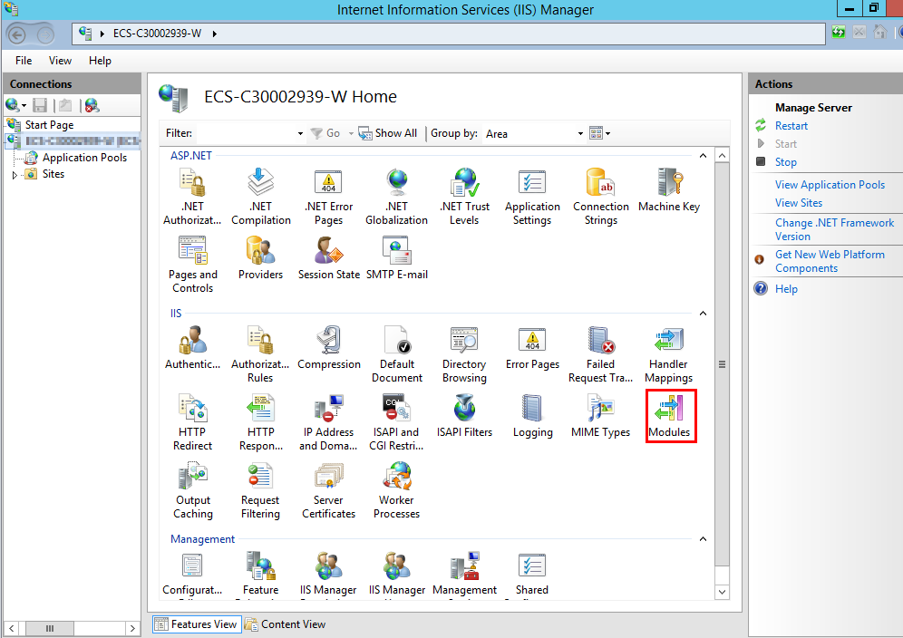
Figure 8 Configure Native Modules
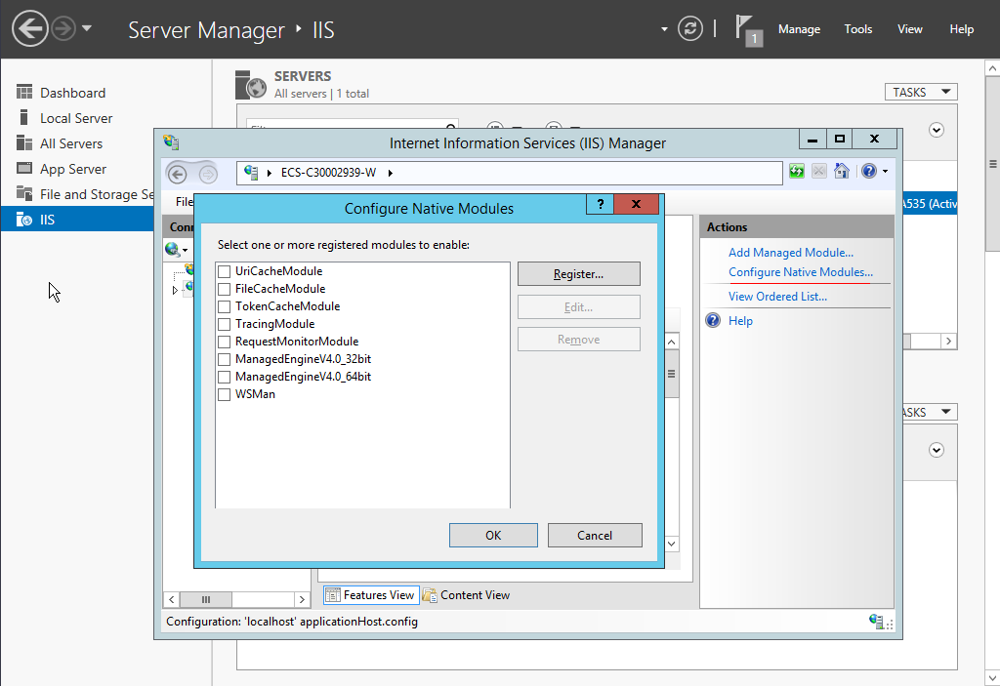
- Click Register to register the x86 and x64 plug-ins.Figure 9 Registering plug-ins
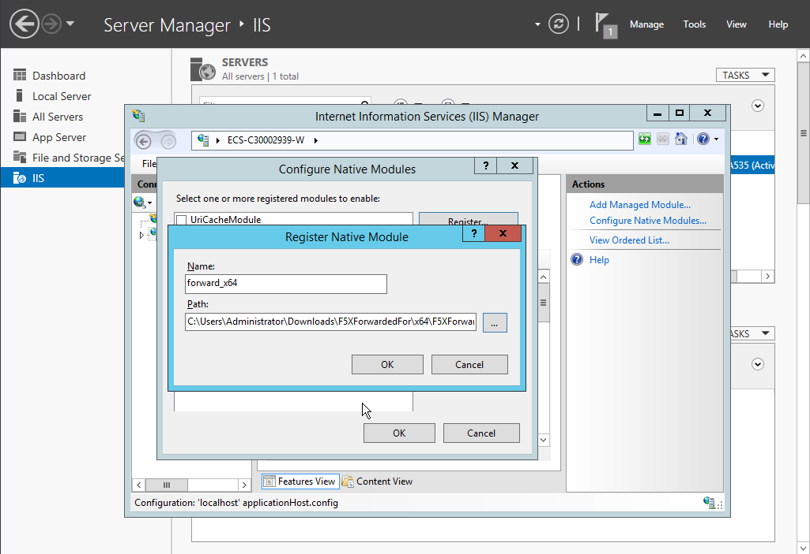
- In the Modules dialog box, verify that the registered plug-ins are displayed in the list.Figure 10 Confirming the registration
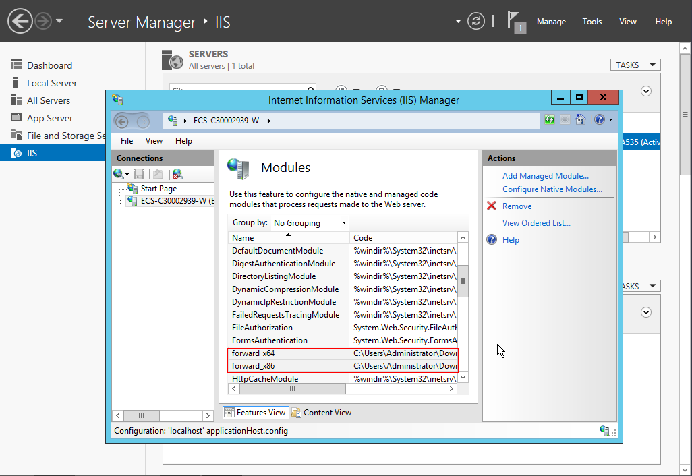
- Select ISAPI Filters on the Server Manager homepage and authorize two plug-ins to run ISAPI and CGI extensions.Figure 11 Adding authorization
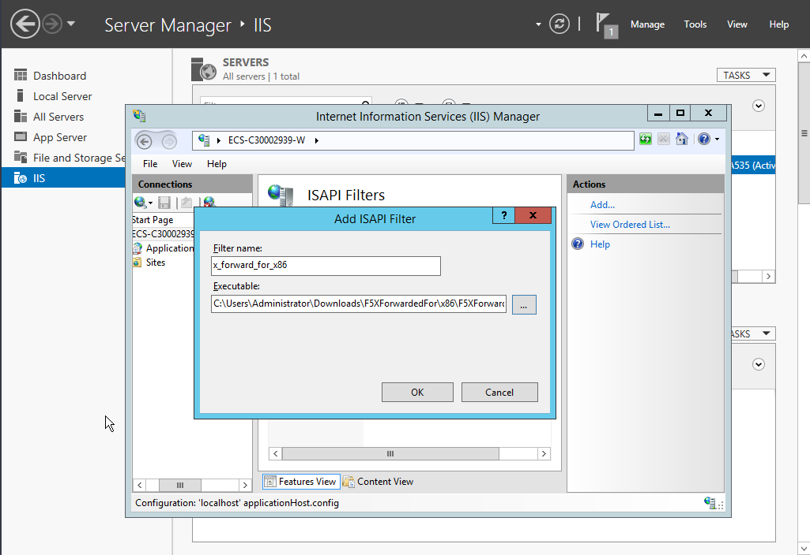
- Select ISAPI and CGI Restriction to set the execution permission for the two plug-ins.Figure 12 Allowing the plug-ins to execute
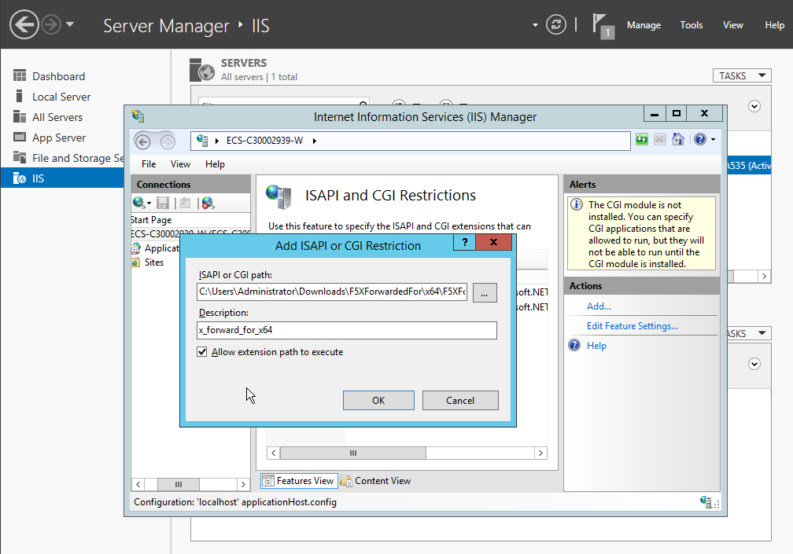
- Click Restart on the homepage to restart IIS. The configuration will take effect after the restart.Figure 13 Restarting IIS
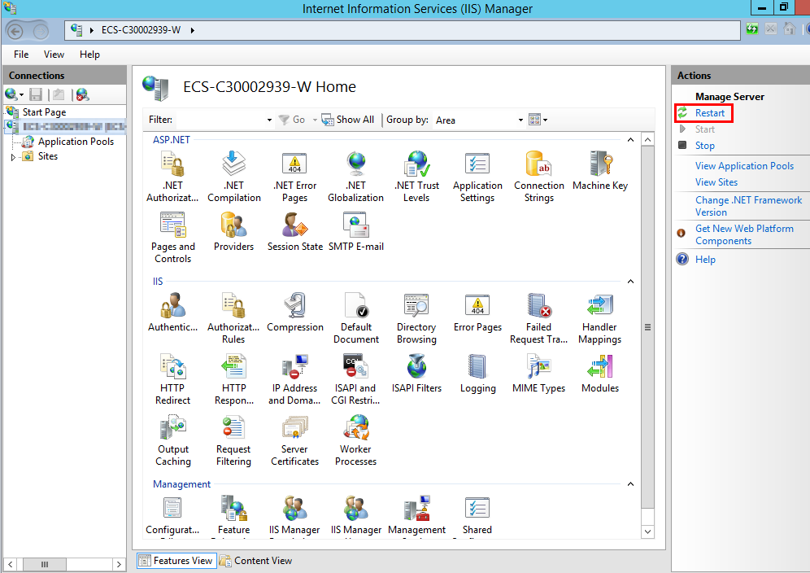
Layer 4 Load Balancing
TCP listeners require the TOA plug-in to obtain real IP addresses. For details, see Configuring the TOA Plug-in.
Parent topic: Obtaining Source IP Addresses